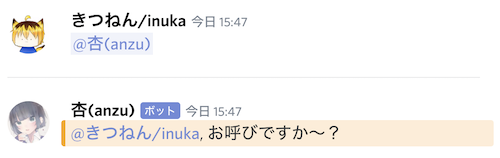
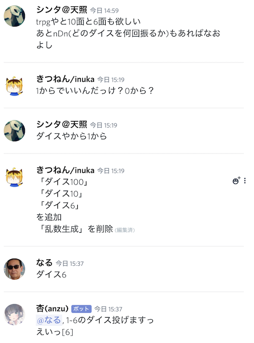

2019/10/23 anzu Ver.0.0.0.1 Pre-Alpha 杏(anzu)生誕
discord.jsにて実装。挨拶など単純なやり取りが可能。「杏(anzu)」ちゃん起動した〜良き良き。
— ゆーとりぷしん (@yutrypsin) October 22, 2019
キャラ設定共に暇な時に出来ること増やしていこう pic.twitter.com/DSEjWESFvI
「おはよう」,「おやすみ」,「こんにちは」,「こんばんは」,「いってきます(いってらっしゃい)」,「ただいま(おかえり)」
2019/10/23 anzu Ver.0.1.0.2 Pre-Alpha 自分の名前を呼ばれると反応
メッセージ内に文字列として杏の名前があると反応。ある程度の表記揺れにも対応。
2019/10/24 anzu Ver.0.2.0.3 Pre-Alpha ジャルジャルのピンポンパンゲームモードを追加
2019/10/25 anzu Ver.0.3.0.4 Pre-Alpha 「(任意のゲーム)をプレイ中」のステータス表示を追加
2019/10/26 anzu Ver.0.3.1.5 Pre-Alpha 自分へのメンションを認識

2019/10/28 anzu Ver.1.0.0.6 Alpha glitchへお引越し
これによりmacbookのオンライン状況に関わらず起動が可能に。
但ししばらく無操作でいると落ちる
杏ちゃんは小悪魔なのでデーモン化しようと思ったりもしたんですがよく分かんなかったので断念
— ゆーとりぷしん (@yutrypsin) October 28, 2019
先程昼休みにMacBookのローカル環境からglitchにお引越ししました〜
まだ常時起動までは実装されてないけどMacBookのオンライン状況関係なく動作できる様にはなりましたとさ〜
2019/10/28 スanzu Ver.1.0.1.7 Alpha テータス表示のバリエーション追加
「 〇〇 をプレイ中」「 〇〇 を視聴中」「 〇〇 を再生中」を選択可能に
(「 〇〇 を配信中」は上手く行かず)


2019/10/28 anzu Ver.1.0.2.8 Alpha ピンパンパンゲームを別モードとして実装
ピンポンパンゲーム中以外は「ピン」や「ピンポンパン」などのゲームルール内の語彙に反応しない
2019/10/28 anzu Ver.1.0.3.9 Alpha 動作確認用に内部変数表示機能の追加
新しい変数を表示するには手動でメッセージ内容を表示する必要あり
2019/10/28 anzu Ver.1.1.0.10 Alpha メンション付きでモーニングコールの追加
個別に手作業でID拾って来て書いている。喋りかけないといけないので実用性無し
対応パターンはドルフィンズメンバーのみ

(遅刻時に「ごめん。授業には間に合いません。今シンガポールに...」の定型文を使い始めたことからの身内ネタ)
2019/10/29 anzu Ver.1.2.0.11 Alpha 時刻や日付を教えてくれる機能の追加
杏に時刻表示させたら-9時間の時差有ったんだけどglitchのサーバーあるのってイギリス辺りなんかな pic.twitter.com/oVyUzb1UDr
— ゆーとりぷしん (@yutrypsin) October 29, 2019
#discordanzu
— ゆーとりぷしん (@yutrypsin) October 29, 2019
あのままだと0〜9時までを24〜32時と表現する事になるのでその時間帯の表記が正しくなるように修正。
ついでにTwitterへのメモにタグを付けることで後で見返しやすいように pic.twitter.com/oyNidzSJ1q
2019/10/30 anzu Ver.2.0.0.12 Alpha 常時起動を実装
GAS(google apps script)でbotのglitchを触る関数を作成
スケジューラーを用いて毎分実行することで自動スリープを延期
これによって完全にオンライン上での開発及び運用体制が構築
参考Qiita→リンク
#discordanzu
— ゆーとりぷしん (@yutrypsin) October 30, 2019
GASがエラー吐かなくなったので多分常時起動出来るようになりました
参考Qiitahttps://t.co/efaJ0GpaUf
2019/10/30 anzu Ver.2.0.1.13 Alpha 名前付きで褒められると喜ぶ様に

2019/10/31 anzu Ver.2.0.2.14 Alpha 他のBOTに反応できる様に
2019/10/31 anzu Ver.2.0.3.15 Alpha ソースコードの整理
2019/10/31 キャラ設定の微修正。裏杏を別キャラ扱いに
2019/10/31 バグ修正
朝起きたら杏(anzu)が落ちていた
原因究明が出来なかったが、botのトークンをリジェネレートかつグリッチを新規プロジェクトに移植したら治った。
その後は安定して動作している。
2019/11/01 anzu Ver.2.1.3.16 乱数生成機能の試作

2019/11/01 anzu Ver.2.1.4.17 ダイス投げ機能への転用

2019/11/01 anzu Ver.2.1.5.18 返答パターンの追加
「What time is it now?」,「Hey」
2019/11/03 anzu Ver.2.1.6.19 返答パターンの追加('付きは複数パターンからのxランダム返答)
「滅亡迅雷.netに接続'(0→7)」,「お前を消す方法'(0→5)」,「名前を呼ばれた'(1→6)」